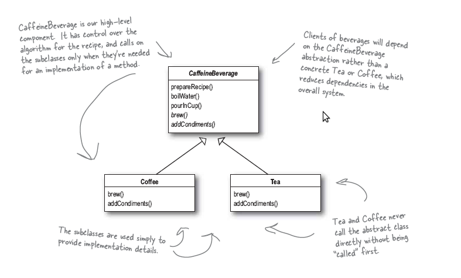
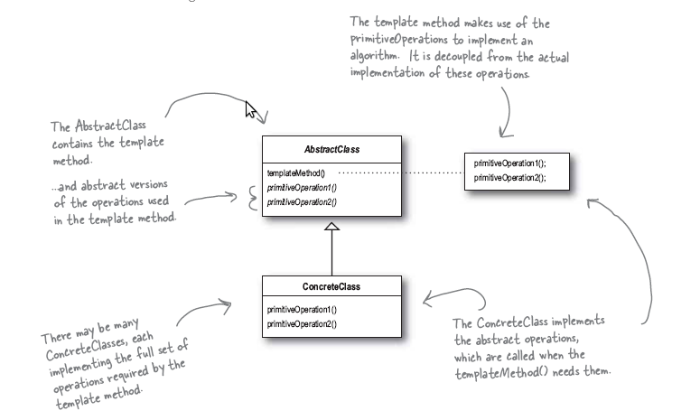

The Template Method pattern defines the skeleton of an algorithm in a method, deferring some steps to subclasses. Template Method lets subclasses redefine certain steps of an algorithm without changing the algorithm’s structure.
模板方法模式 在一个方法中定义了一个算法的框架(骨架), 把一些步骤推给子类. 模板方法 使得子类能够重新定义算法中的某些步骤而无须更改算法结构.
对于一个兼营咖啡和茶的店,两种饮品的烹饪方式是相同的:
可以使用 模板模式 来完成.
具体的实现类图如下:
Template模式的类图如下:
下载请点击 这里
1 2 3 4 5 6 7 8 9 10 11 12 13 14 15 16 17 18 19 20 21 22 23 24 25 26 27 28 29 30 31 32 33 34 35 36 37 38 39 40 41 42 43 44 45 46 47 48 49 50 51 52 53 54 55 56 57 58 59 60 61 62 63 64 65 66 67 68 69 70 71 72 73 74 75 | #include<iostream>
#include<string>
using namespace std;
class CaffeineBeverage
{
public:
void prepareRecipe()
{
boildWater();
brew();
pourInCup();
if (customerWantsCondiments())
{
addCondiments();
}
}
void boildWater(){cout<<"Boiling water."<<endl;}
void pourInCup(){cout<<"Pouring into cup."<<endl;}
virtual void brew(){}
virtual void addCondiments(){}
virtual bool customerWantsCondiments(){return true;} // the hook to offer a way to change the algorithm
};
class Coffee:public CaffeineBeverage
{
public:
void brew(){cout<<"Dripping Coffee through filter."<<endl;}
void addCondiments(){cout<<"Adding sugar and Milk"<<endl;}
bool customerWantsCondiments()
{
char choice;
while(true)
{
cout<<"Whether you wanna add sugar and milk?(y/n)"<<endl;
cin>>choice;
if (choice == 'y' || choice == 'n')
break;
}
return choice=='y'?true:false;
}
};
class Tea:public CaffeineBeverage
{
public:
void brew(){cout<<"Dripping Tea through filter."<<endl;}
void addCondiments(){cout<<"Adding lemon"<<endl;}
bool customerWantsCondiments()
{
char choice;
while(true)
{
cout<<"Whether you wanna add lemon?(y/n)"<<endl;
cin>>choice;
if (choice == 'y' || choice == 'n')
break;
}
return choice=='y'?true:false;
}
};
int main()
{
Coffee coffee;
Tea tea;
cout<<"##### Preparing the Coffee ######"<<endl;
coffee.prepareRecipe();
cout<<"##### Preparing the Tea ######"<<endl;
tea.prepareRecipe();
return 0;
}
|
输出结果为:
##### Preparing the Coffee ######
Boiling water.
Dripping Coffee through filter.
Pouring into cup.
Whether you wanna add sugar and milk?(y/n)
y
Adding sugar and Milk
##### Preparing the Tea ######
Boiling water.
Dripping Tea through filter.
Pouring into cup.
Whether you wanna add lemon?(y/n)
n
如果需要更改算法具体的实现,则无须更改具体的算法类,只需要更改相应的实现即可.
设计准则:
The Hollywood Principle: Don’t call us, We’ll call you.
Template模式 vs. Strategy模式 vs. Factory模式:
在 模板模式 中注意 hook 的使用(hook是一些方法,它们在抽象类默认无功能或者有默认功能,但可以在子类中重载)